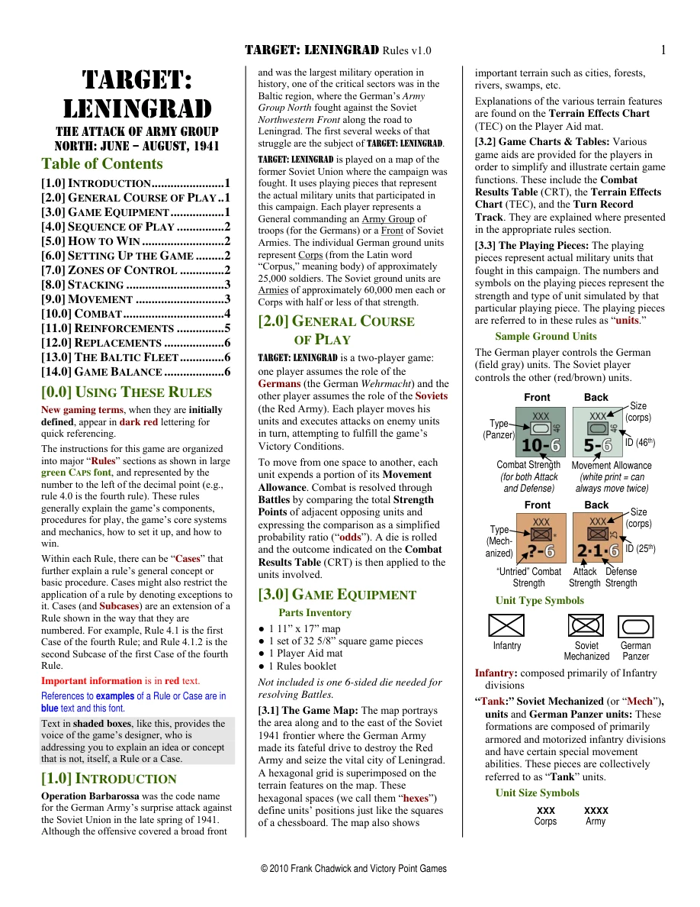
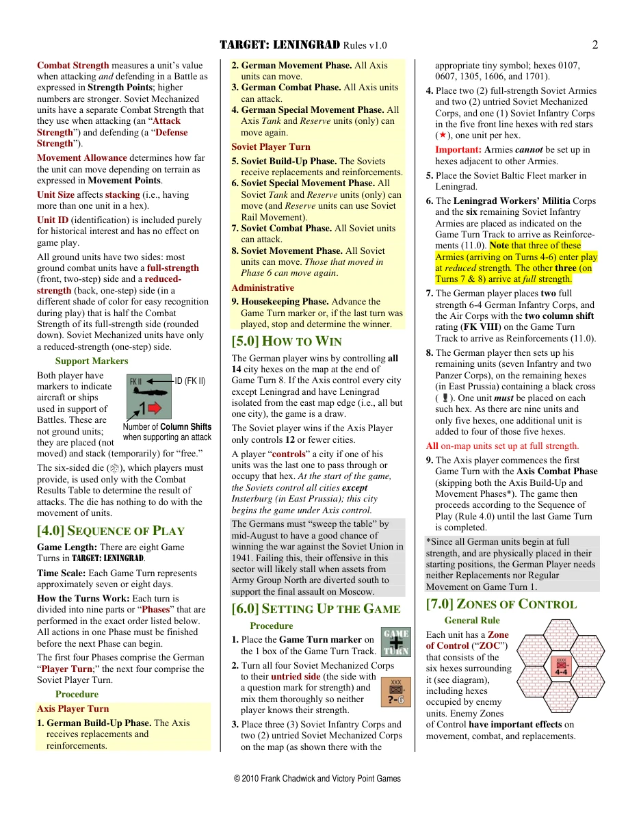
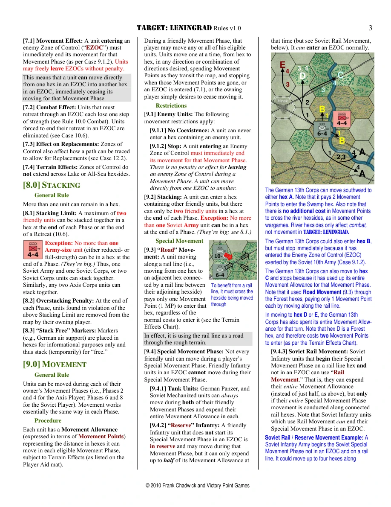
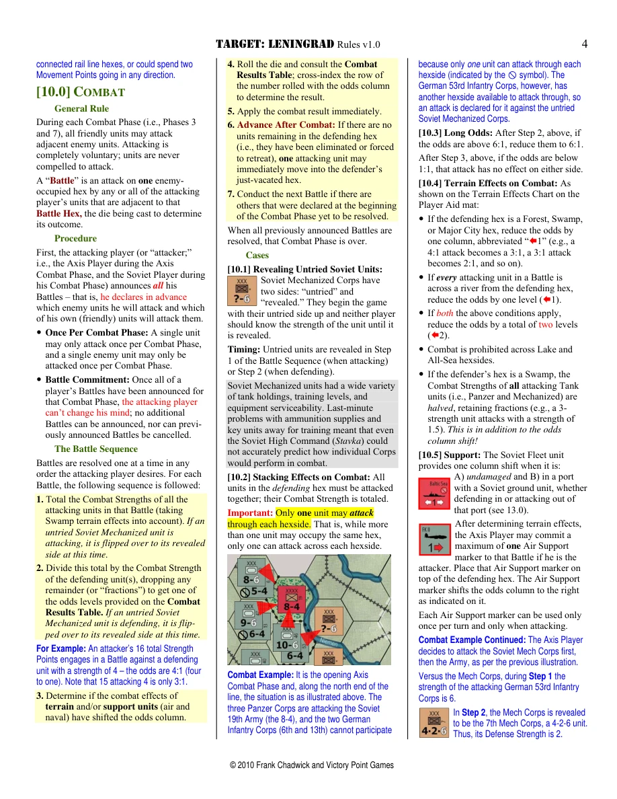
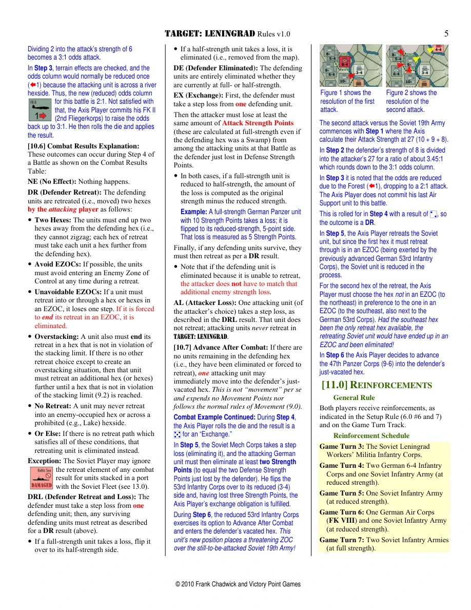
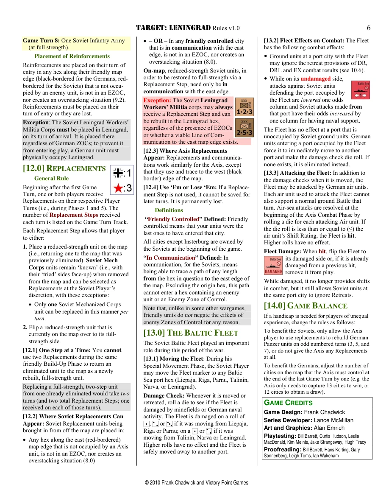

Target: Leningrad
Source reading edition. Extracted text may contain reading-order or formatting errors; consult the original page for tables, diagrams and exact wording. Printed rules are not a statement of active engine adaptations. Use the in-game Terrain Effects and CRT references for active configuration.
Numbered cases (33)
Repeated printed numbers are preserved as separate entries. Page images remain authoritative.
- [3.1] — p. 1
- [3.2] — p. 1
- [3.3] — p. 1
- [7.1] — p. 3
- [7.2] — p. 3
- [7.3] — p. 3
- [7.4] — p. 3
- [8.1] — p. 3
- [8.2] — p. 3
- [8.3] — p. 3
- [9.1] — p. 3
- [9.1.1] — p. 3
- [9.1.2] — p. 3
- [9.2] — p. 3
- [9.3] — p. 3
- [9.4] — p. 3
- [9.4.1] — p. 3
- [9.4.2] — p. 3
- [9.4.3] — p. 3
- [10.1] — p. 4
- [10.2] — p. 4
- [10.3] — p. 4
- [10.4] — p. 4
- [10.5] — p. 4
- [10.6] — p. 5
- [10.7] — p. 5
- [12.1] — p. 6
- [12.2] — p. 6
- [12.3] — p. 6
- [12.4] — p. 6
- [13.1] — p. 6
- [13.2] — p. 6
- [13.3] — p. 6
Printed page 1
Original page — illustrations and exact layout

Target: Leningrad The Attack of Army Group North: June – August, 1941 Table of Contents [1.0] INTRODUCTION.......................1 [2.0] GENERAL COURSE OF PLAY..1 [3.0] GAME EQUIPMENT.................1 [4.0] SEQUENCE OF PLAY ...............2 [5.0] HOW TO WIN ..........................2 [6.0] SETTING UP THE GAME .........2 [7.0] ZONES OF CONTROL ..............2 [8.0] STACKING ...............................3 [9.0] MOVEMENT ............................3 [10.0] COMBAT................................4 [11.0] REINFORCEMENTS ...............5 [12.0] REPLACEMENTS ...................6 [13.0] THE BALTIC FLEET..............6 [14.0] GAME BALANCE...................6
[0.0] USING THESE RULES
New gaming terms, when they are initially defined, appear in dark red lettering for quick referencing. The instructions for this game are organized into major “Rules” sections as shown in large green CAPS font, and represented by the number to the left of the decimal point (e.g., rule 4.0 is the fourth rule). These rules generally explain the game’s components, procedures for play, the game’s core systems and mechanics, how to set it up, and how to win. Within each Rule, there can be “Cases” that further explain a rule’s general concept or basic procedure. Cases might also restrict the application of a rule by denoting exceptions to it. Cases (and Subcases) are an extension of a Rule shown in the way that they are numbered. For example, Rule 4.1 is the first Case of the fourth Rule; and Rule 4.1.2 is the second Subcase of the first Case of the fourth Rule. Important information is in red text. References to examples of a Rule or Case are in blue text and this font. Text in shaded boxes, like this, provides the voice of the game’s designer, who is addressing you to explain an idea or concept that is not, itself, a Rule or a Case.
[1.0] INTRODUCTION
Operation Barbarossa was the code name for the German Army’s surprise attack against the Soviet Union in the late spring of 1941. Although the offensive covered a broad front
and was the largest military operation in history, one of the critical sectors was in the Baltic region, where the German’s Army Group North fought against the Soviet Northwestern Front along the road to Leningrad. The first several weeks of that struggle are the subject of Target: Leningrad.
Target: Leningrad is played on a map of the former Soviet Union where the campaign was fought. It uses playing pieces that represent the actual military units that participated in this campaign. Each player represents a General commanding an Army Group of troops (for the Germans) or a Front of Soviet Armies. The individual German ground units represent Corps (from the Latin word “Corpus,” meaning body) of approximately 25,000 soldiers. The Soviet ground units are Armies of approximately 60,000 men each or Corps with half or less of that strength.
[2.0] GENERAL COURSE OF PLAY
Target: Leningrad is a two-player game: one player assumes the role of the Germans (the German Wehrmacht) and the other player assumes the role of the Soviets (the Red Army). Each player moves his units and executes attacks on enemy units in turn, attempting to fulfill the game’s Victory Conditions. To move from one space to another, each unit expends a portion of its Movement Allowance. Combat is resolved through Battles by comparing the total Strength Points of adjacent opposing units and expressing the comparison as a simplified probability ratio (“odds”). A die is rolled and the outcome indicated on the Combat Results Table (CRT) is then applied to the units involved.
[3.0] GAME EQUIPMENT
Parts Inventory ● 1 11” x 17” map ● 1 set of 32 5/8” square game pieces ● 1 Player Aid mat ● 1 Rules booklet Not included is one 6-sided die needed for resolving Battles.
[3.1] The Game Map: The map portrays the area along and to the east of the Soviet 1941 frontier where the German Army made its fateful drive to destroy the Red Army and seize the vital city of Leningrad. A hexagonal grid is superimposed on the terrain features on the map. These hexagonal spaces (we call them “hexes”) define units’ positions just like the squares of a chessboard. The map also shows
important terrain such as cities, forests, rivers, swamps, etc. Explanations of the various terrain features are found on the Terrain Effects Chart (TEC) on the Player Aid mat.
[3.2] Game Charts & Tables: Various game aids are provided for the players in order to simplify and illustrate certain game functions. These include the Combat Results Table (CRT), the Terrain Effects Chart (TEC), and the Turn Record Track. They are explained where presented in the appropriate rules section.
[3.3] The Playing Pieces: The playing pieces represent actual military units that fought in this campaign. The numbers and symbols on the playing pieces represent the strength and type of unit simulated by that particular playing piece. The playing pieces are referred to in these rules as “units.”
Sample Ground Units The German player controls the German (field gray) units. The Soviet player controls the other (red/brown) units.
Front Back
Size (corps)
Type (Panzer)
ID (46th)
Combat Strength (for both Attack and Defense)
Movement Allowance (white print = can always move twice)
Front Back
Size (corps)
Type (Mech- anized)
ID (25th)
“Untried” Combat Strength
Attack Strength Defense Strength
Unit Type Symbols
German Panzer Infantry
Soviet Mechanized
Infantry: composed primarily of Infantry divisions “Tank:” Soviet Mechanized (or “Mech”), units and German Panzer units: These formations are composed of primarily armored and motorized infantry divisions and have certain special movement abilities. These pieces are collectively referred to as “Tank” units.
Unit Size Symbols
Corps Army XXX XXXX
Printed page 2
Original page — illustrations and exact layout

Combat Strength measures a unit’s value when attacking and defending in a Battle as expressed in Strength Points; higher numbers are stronger. Soviet Mechanized units have a separate Combat Strength that they use when attacking (an “Attack Strength”) and defending (a “Defense Strength”). Movement Allowance determines how far the unit can move depending on terrain as expressed in Movement Points. Unit Size affects stacking (i.e., having more than one unit in a hex). Unit ID (identification) is included purely for historical interest and has no effect on game play. All ground units have two sides: most ground combat units have a full-strength (front, two-step) side and a reduced- strength (back, one-step) side (in a different shade of color for easy recognition during play) that is half the Combat Strength of its full-strength side (rounded down). Soviet Mechanized units have only a reduced-strength (one-step) side.
Support Markers Both player have markers to indicate aircraft or ships used in support of Battles. These are not ground units; they are placed (not moved) and stack (temporarily) for “free.” The six-sided die (H), which players must provide, is used only with the Combat Results Table to determine the result of attacks. The die has nothing to do with the movement of units.
[4.0] SEQUENCE OF PLAY
ID (FK II)
Number of Column Shifts when supporting an attack
Game Length: There are eight Game Turns in Target: Leningrad.
Time Scale: Each Game Turn represents approximately seven or eight days. How the Turns Work: Each turn is divided into nine parts or “Phases” that are performed in the exact order listed below. All actions in one Phase must be finished before the next Phase can begin. The first four Phases comprise the German “Player Turn;” the next four comprise the Soviet Player Turn.
Procedure Axis Player Turn 1. German Build-Up Phase. The Axis
receives replacements and reinforcements.
2. German Movement Phase. All Axis
units can move. 3. German Combat Phase. All Axis units
can attack. 4. German Special Movement Phase. All
Axis Tank and Reserve units (only) can move again. Soviet Player Turn 5. Soviet Build-Up Phase. The Soviets
receive replacements and reinforcements. 6. Soviet Special Movement Phase. All
Soviet Tank and Reserve units (only) can move (and Reserve units can use Soviet Rail Movement). 7. Soviet Combat Phase. All Soviet units
can attack. 8. Soviet Movement Phase. All Soviet
units can move. Those that moved in Phase 6 can move again. Administrative 9. Housekeeping Phase. Advance the
Game Turn marker or, if the last turn was played, stop and determine the winner.
[5.0] HOW TO WIN
The German player wins by controlling all 14 city hexes on the map at the end of Game Turn 8. If the Axis control every city except Leningrad and have Leningrad isolated from the east map edge (i.e., all but one city), the game is a draw. The Soviet player wins if the Axis Player only controls 12 or fewer cities. A player “controls” a city if one of his units was the last one to pass through or occupy that hex. At the start of the game, the Soviets control all cities except Insterburg (in East Prussia); this city begins the game under Axis control. The Germans must “sweep the table” by mid-August to have a good chance of winning the war against the Soviet Union in 1941. Failing this, their offensive in this sector will likely stall when assets from Army Group North are diverted south to support the final assault on Moscow.
[6.0] SETTING UP THE GAME
Procedure 1. Place the Game Turn marker on
the 1 box of the Game Turn Track. 2. Turn all four Soviet Mechanized Corps
to their untried side (the side with a question mark for strength) and mix them thoroughly so neither player knows their strength. 3. Place three (3) Soviet Infantry Corps and two (2) untried Soviet Mechanized Corps on the map (as shown there with the
appropriate tiny symbol; hexes 0107, 0607, 1305, 1606, and 1701). 4. Place two (2) full-strength Soviet Armies and two (2) untried Soviet Mechanized Corps, and one (1) Soviet Infantry Corps in the five front line hexes with red stars (), one unit per hex. Important: Armies cannot be set up in hexes adjacent to other Armies. 5. Place the Soviet Baltic Fleet marker in Leningrad. 6. The Leningrad Workers’ Militia Corps and the six remaining Soviet Infantry Armies are placed as indicated on the Game Turn Track to arrive as Reinforce- ments (11.0). Note that three of these Armies (arriving on Turns 4-6) enter play at reduced strength. The other three (on Turns 7 & 8) arrive at full strength. 7. The German player places two full strength 6-4 German Infantry Corps, and the Air Corps with the two column shift rating (FK VIII) on the Game Turn Track to arrive as Reinforcements (11.0). 8. The German player then sets up his remaining units (seven Infantry and two Panzer Corps), on the remaining hexes (in East Prussia) containing a black cross (!). One unit must be placed on each such hex. As there are nine units and only five hexes, one additional unit is added to four of those five hexes. All on-map units set up at full strength. 9. The Axis player commences the first Game Turn with the Axis Combat Phase (skipping both the Axis Build-Up and Movement Phases*). The game then proceeds according to the Sequence of Play (Rule 4.0) until the last Game Turn is completed. *Since all German units begin at full strength, and are physically placed in their starting positions, the German Player needs neither Replacements nor Regular Movement on Game Turn 1.
[7.0] ZONES OF CONTROL
General Rule Each unit has a Zone of Control (“ZOC”) that consists of the six hexes surrounding it (see diagram), including hexes occupied by enemy units. Enemy Zones of Control have important effects on movement, combat, and replacements.
Printed page 3
Original page — illustrations and exact layout

[7.1] Movement Effect: A unit entering an enemy Zone of Control (“EZOC”) must immediately end its movement for that Movement Phase (as per Case 9.1.2). Units may freely leave EZOCs without penalty. This means that a unit can move directly from one hex in an EZOC into another hex in an EZOC, immediately ceasing its moving for that Movement Phase.
[7.2] Combat Effect: Units that must retreat through an EZOC each lose one step of strength (see Rule 10.0 Combat). Units forced to end their retreat in an EZOC are eliminated (see Case 10.6).
[7.3] Effect on Replacements: Zones of Control also affect how a path can be traced to allow for Replacements (see Case 12.2).
[7.4] Terrain Effects: Zones of Control do not extend across Lake or All-Sea hexsides.
[8.0] STACKING
General Rule More than one unit can remain in a hex.
[8.1] Stacking Limit: A maximum of two friendly units can be stacked together in a hex at the end of each Phase or at the end of a Retreat (10.6).
Exception: No more than one Army-size unit (either reduced- or full-strength) can be in a hex at the end of a Phase. (They’re big.) Thus, one Soviet Army and one Soviet Corps, or two Soviet Corps units can stack together. Similarly, any two Axis Corps units can stack together.
[8.2] Overstacking Penalty: At the end of each Phase, units found in violation of the above Stacking Limit are removed from the map by their owning player.
[8.3] “Stack Free” Markers: Markers (e.g., German air support) are placed in hexes for informational purposes only and thus stack (temporarily) for “free.”
[9.0] MOVEMENT
General Rule Units can be moved during each of their owner’s Movement Phases (i.e., Phases 2 and 4 for the Axis Player; Phases 6 and 8 for the Soviet Player). Movement works essentially the same way in each Phase.
Procedure Each unit has a Movement Allowance (expressed in terms of Movement Points) representing the distance in hexes it can move in each eligible Movement Phase, subject to Terrain Effects (as listed on the Player Aid mat).
During a friendly Movement Phase, that player may move any or all of his eligible units. Units move one at a time, from hex to hex, in any direction or combination of directions desired, spending Movement Points as they transit the map, and stopping when those Movement Points are gone, or an EZOC is entered (7.1), or the owning player simply desires to cease moving it.
Restrictions
[9.1] Enemy Units: The following movement restrictions apply:
[9.1.1] No Coexistence: A unit can never enter a hex containing an enemy unit.
[9.1.2] Stop: A unit entering an Enemy Zone of Control must immediately end its movement for that Movement Phase. There is no penalty or effect for leaving an enemy Zone of Control during a Movement Phase. A unit can move directly from one EZOC to another.
[9.2] Stacking: A unit can enter a hex containing other friendly units, but there can only be two friendly units in a hex at the end of each Phase. Exception: No more than one Soviet Army unit can be in a hex at the end of a Phase. (They’re big; see 8.1.)
Special Movement
[9.3] “Road” Move- ment: A unit moving along a rail line (i.e., moving from one hex to an adjacent hex connec- ted by a rail line between their adjoining hexside) pays only one Movement Point (1 MP) to enter that hex, regardless of the normal costs to enter it (see the Terrain Effects Chart). In effect, it is using the rail line as a road through the rough terrain.
[9.4] Special Movement Phase: Not every friendly unit can move during a player’s Special Movement Phase. Friendly Infantry units in an EZOC cannot move during their Special Movement Phase.
[9.4.1] Tank Units: German Panzer, and Soviet Mechanized units can always move during both of their friendly Movement Phases and expend their entire Movement Allowance in each.
[9.4.2] “Reserve” Infantry: A friendly Infantry unit that does not start its Special Movement Phase in an EZOC is in reserve and may move during that Movement Phase, but it can only expend up to half of its Movement Allowance at
To benefit from a rail line, it must cross the hexside being moved through
that time (but see Soviet Rail Movement, below). It can enter an EZOC normally.
4 3, 4 D E
C
3 4 3
2
B
1
1
B 1
A
1 2,3 4
4A
The German 13th Corps can move southward to either hex A. Note that it pays 2 Movement Points to enter the Swamp hex. Also note that there is no additional cost in Movement Points to cross the river hexsides, as in some other wargames. River hexsides only affect combat, not movement in target: Leningrad.
The German 13th Corps could also enter hex B, but must stop immediately because it has entered the Enemy Zone of Control (EZOC) exerted by the Soviet 10th Army (Case 9.1.2). The German 13th Corps can also move to hex C and stops because it has used up its entire Movement Allowance for that Movement Phase. Note that it used Road Movement (9.3) through the Forest hexes, paying only 1 Movement Point each by moving along the rail line. In moving to hex D or E, the German 13th Corps has also spent its entire Movement Allow- ance for that turn. Note that hex D is a Forest hex, and therefore costs two Movement Points to enter (as per the Terrain Effects Chart).
[9.4.3] Soviet Rail Movement: Soviet Infantry units that begin their Special Movement Phase on a rail line hex and not in an EZOC can use “Rail Movement.” That is, they can expend their entire Movement Allowance (instead of just half, as above), but only if their entire Special Movement Phase movement is conducted along connected rail hexes. Note that Soviet Infantry units which use Rail Movement can end their Special Movement Phase in an EZOC. Soviet Rail / Reserve Movement Example: A Soviet Infantry Army begins the Soviet Special Movement Phase not in an EZOC and on a rail line. It could move up to four hexes along
Printed page 4
Original page — illustrations and exact layout

connected rail line hexes, or could spend two Movement Points going in any direction.
[10.0] COMBAT
General Rule During each Combat Phase (i.e., Phases 3 and 7), all friendly units may attack adjacent enemy units. Attacking is completely voluntary; units are never compelled to attack. A “Battle” is an attack on one enemy- occupied hex by any or all of the attacking player’s units that are adjacent to that Battle Hex, the die being cast to determine its outcome.
Procedure First, the attacking player (or “attacker;” i.e., the Axis Player during the Axis Combat Phase, and the Soviet Player during his Combat Phase) announces all his Battles – that is, he declares in advance which enemy units he will attack and which of his own (friendly) units will attack them. • Once Per Combat Phase: A single unit may only attack once per Combat Phase, and a single enemy unit may only be attacked once per Combat Phase. • Battle Commitment: Once all of a player’s Battles have been announced for that Combat Phase, the attacking player can’t change his mind; no additional Battles can be announced, nor can previ- ously announced Battles be cancelled.
The Battle Sequence Battles are resolved one at a time in any order the attacking player desires. For each Battle, the following sequence is followed: 1. Total the Combat Strengths of all the
attacking units in that Battle (taking Swamp terrain effects into account). If an untried Soviet Mechanized unit is attacking, it is flipped over to its revealed side at this time. 2. Divide this total by the Combat Strength
of the defending unit(s), dropping any remainder (or “fractions”) to get one of the odds levels provided on the Combat Results Table. If an untried Soviet Mechanized unit is defending, it is flip- ped over to its revealed side at this time. For Example: An attacker’s 16 total Strength Points engages in a Battle against a defending unit with a strength of 4 – the odds are 4:1 (four to one). Note that 15 attacking 4 is only 3:1. 3. Determine if the combat effects of
terrain and/or support units (air and naval) have shifted the odds column.
4. Roll the die and consult the Combat
Results Table; cross-index the row of the number rolled with the odds column to determine the result. 5. Apply the combat result immediately. 6. Advance After Combat: If there are no
units remaining in the defending hex (i.e., they have been eliminated or forced to retreat), one attacking unit may immediately move into the defender’s just-vacated hex. 7. Conduct the next Battle if there are
others that were declared at the beginning of the Combat Phase yet to be resolved. When all previously announced Battles are resolved, that Combat Phase is over.
Cases
[10.1] Revealing Untried Soviet Units: Soviet Mechanized Corps have two sides: “untried” and “revealed.” They begin the game with their untried side up and neither player should know the strength of the unit until it is revealed. Timing: Untried units are revealed in Step 1 of the Battle Sequence (when attacking) or Step 2 (when defending). Soviet Mechanized units had a wide variety of tank holdings, training levels, and equipment serviceability. Last-minute problems with ammunition supplies and key units away for training meant that even the Soviet High Command (Stavka) could not accurately predict how individual Corps would perform in combat.
[10.2] Stacking Effects on Combat: All units in the defending hex must be attacked together; their Combat Strength is totaled. Important: Only one unit may attack through each hexside. That is, while more than one unit may occupy the same hex, only one can attack across each hexside.
Combat Example: It is the opening Axis Combat Phase and, along the north end of the line, the situation is as illustrated above. The three Panzer Corps are attacking the Soviet 19th Army (the 8-4), and the two German Infantry Corps (6th and 13th) cannot participate
because only one unit can attack through each hexside (indicated by the symbol). The German 53rd Infantry Corps, however, has another hexside available to attack through, so an attack is declared for it against the untried Soviet Mechanized Corps.
[10.3] Long Odds: After Step 2, above, if the odds are above 6:1, reduce them to 6:1. After Step 3, above, if the odds are below 1:1, that attack has no effect on either side.
[10.4] Terrain Effects on Combat: As shown on the Terrain Effects Chart on the Player Aid mat: • If the defending hex is a Forest, Swamp, or Major City hex, reduce the odds by one column, abbreviated “1” (e.g., a 4:1 attack becomes a 3:1, a 3:1 attack becomes 2:1, and so on). • If every attacking unit in a Battle is across a river from the defending hex, reduce the odds by one level (1). • If both the above conditions apply, reduce the odds by a total of two levels (2). • Combat is prohibited across Lake and All-Sea hexsides. • If the defender’s hex is a Swamp, the Combat Strengths of all attacking Tank units (i.e., Panzer and Mechanized) are halved, retaining fractions (e.g., a 3- strength unit attacks with a strength of 1.5). This is in addition to the odds column shift!
[10.5] Support: The Soviet Fleet unit provides one column shift when it is: A) undamaged and B) in a port with a Soviet ground unit, whether defending in or attacking out of that port (see 13.0). After determining terrain effects, the Axis Player may commit a maximum of one Air Support marker to that Battle if he is the attacker. Place that Air Support marker on top of the defending hex. The Air Support marker shifts the odds column to the right as indicated on it. Each Air Support marker can be used only once per turn and only when attacking. Combat Example Continued: The Axis Player decides to attack the Soviet Mech Corps first, then the Army, as per the previous illustration. Versus the Mech Corps, during Step 1 the strength of the attacking German 53rd Infantry Corps is 6. In Step 2, the Mech Corps is revealed to be the 7th Mech Corps, a 4-2-6 unit. Thus, its Defense Strength is 2.
Printed page 5
Original page — illustrations and exact layout

Dividing 2 into the attack’s strength of 6 becomes a 3:1 odds attack. In Step 3, terrain effects are checked, and the odds column would normally be reduced once (1) because the attacking unit is across a river hexside. Thus, the new (reduced) odds column for this battle is 2:1. Not satisfied with that, the Axis Player commits his FK II (2nd Fliegerkorps) to raise the odds back up to 3:1. He then rolls the die and applies the result.
[10.6] Combat Results Explanation: These outcomes can occur during Step 4 of a Battle as shown on the Combat Results Table: NE (No Effect): Nothing happens. DR (Defender Retreat): The defending units are retreated (i.e., moved) two hexes by the attacking player as follows: • Two Hexes: The units must end up two hexes away from the defending hex (i.e., they cannot zigzag; each hex of retreat must take each unit a hex further from the defending hex). • Avoid EZOCs: If possible, the units must avoid entering an Enemy Zone of Control at any time during a retreat. • Unavoidable EZOCs: If a unit must retreat into or through a hex or hexes in an EZOC, it loses one step. If it is forced to end its retreat in an EZOC, it is eliminated. • Overstacking: A unit also must end its retreat in a hex that is not in violation of the stacking limit. If there is no other retreat choice except to create an overstacking situation, then that unit must retreat an additional hex (or hexes) further until a hex that is not in violation of the stacking limit (9.2) is reached. • No Retreat: A unit may never retreat into an enemy-occupied hex or across a prohibited (e.g., Lake) hexside. • Or Else: If there is no retreat path which satisfies all of these conditions, that retreating unit is eliminated instead. Exception: The Soviet Player may ignore the retreat element of any combat result for units stacked in a port with the Soviet Fleet (see 13.0). DRL (Defender Retreat and Loss): The defender must take a step loss from one defending unit; then, any surviving defending units must retreat as described for a DR result (above). • If a full-strength unit takes a loss, flip it over to its half-strength side.
• If a half-strength unit takes a loss, it is eliminated (i.e., removed from the map). DE (Defender Eliminated): The defending units are entirely eliminated whether they are currently at full- or half-strength. EX (Exchange): First, the defender must take a step loss from one defending unit. Then the attacker must lose at least the same amount of Attack Strength Points (these are calculated at full-strength even if the defending hex was a Swamp) from among the attacking units at that Battle as the defender just lost in Defense Strength Points. • In both cases, if a full-strength unit is reduced to half-strength, the amount of the loss is computed as the original strength minus the reduced strength. Example: A full-strength German Panzer unit with 10 Strength Points takes a loss; it is flipped to its reduced-strength, 5-point side. That loss is measured as 5 Strength Points. Finally, if any defending units survive, they must then retreat as per a DR result. • Note that if the defending unit is eliminated because it is unable to retreat, the attacker does not have to match that additional enemy strength loss. AL (Attacker Loss): One attacking unit (of the attacker’s choice) takes a step loss, as described in the DRL result. That unit does not retreat; attacking units never retreat in Target: Leningrad.
[10.7] Advance After Combat: If there are no units remaining in the defending hex (i.e., they have been eliminated or forced to retreat), one attacking unit may immediately move into the defender’s just- vacated hex. This is not “movement” per se and expends no Movement Points nor follows the normal rules of Movement (9.0). Combat Example Continued: During Step 4, the Axis Player rolls the die and the result is a % for an “Exchange.”
In Step 5, the Soviet Mech Corps takes a step loss (eliminating it), and the attacking German unit must then eliminate at least two Strength Points (to equal the two Defense Strength Points just lost by the defender). He flips the 53rd Infantry Corps over to its reduced (3-4) side and, having lost three Strength Points, the Axis Player’s exchange obligation is fulfilled. During Step 6, the reduced 53rd Infantry Corps exercises its option to Advance After Combat and enters the defender’s vacated hex. This unit’s new position places a threatening ZOC over the still-to-be-attacked Soviet 19th Army!
Figure 1 shows the resolution of the first attack.
Figure 2 shows the resolution of the second attack.
The second attack versus the Soviet 19th Army commences with Step 1 where the Axis calculate their Attack Strength at 27 (10 + 9 + 8). In Step 2 the defender’s strength of 8 is divided into the attacker’s 27 for a ratio of about 3.45:1 which rounds down to the 3:1 odds column. In Step 3 it is noted that the odds are reduced due to the Forest (1), dropping to a 2:1 attack. The Axis Player does not commit his last Air Support unit to this battle. This is rolled for in Step 4 with a result of @, so the outcome is a DR. In Step 5, the Axis Player retreats the Soviet unit, but since the first hex it must retreat through is in an EZOC (being exerted by the previously advanced German 53rd Infantry Corps), the Soviet unit is reduced in the process. For the second hex of the retreat, the Axis Player must choose the hex not in an EZOC (to the northeast) in preference to the one in an EZOC (to the southeast, also next to the German 53rd Corps). Had the southeast hex been the only retreat hex available, the retreating Soviet unit would have ended up in an EZOC and been eliminated! In Step 6 the Axis Player decides to advance the 47th Panzer Corps (9-6) into the defender’s just-vacated hex.
[11.0] REINFORCEMENTS
General Rule Both players receive reinforcements, as indicated in the Setup Rule (6.0 #6 and 7) and on the Game Turn Track.
Reinforcement Schedule Game Turn 3: The Soviet Leningrad
Workers’ Militia Infantry Corps. Game Turn 4: Two German 6-4 Infantry
Corps and one Soviet Infantry Army (at reduced strength). Game Turn 5: One Soviet Infantry Army
(at reduced strength). Game Turn 6: One German Air Corps
(FK VIII) and one Soviet Infantry Army (at reduced strength). Game Turn 7: Two Soviet Infantry Armies
(at full strength).
Printed page 6
Original page — illustrations and exact layout

Game Turn 8: One Soviet Infantry Army
(at full strength).
Placement of Reinforcements Reinforcements are placed on their turn of entry in any hex along their friendly map edge (black-bordered for the Germans, red- bordered for the Soviets) that is not occu- pied by an enemy unit, is not in an EZOC, nor creates an overstacking situation (9.2). Reinforcements must be placed on their turn of entry or they are lost. Exception: The Soviet Leningrad Workers’ Militia Corps must be placed in Leningrad, on its turn of arrival. It is placed there regardless of German ZOCs; to prevent it from entering play, a German unit must physically occupy Leningrad.
[12.0] REPLACEMENTS
General Rule Beginning after the first Game Turn, one or both players receive Replacements on their respective Player Turns (i.e., during Phases 1 and 5). The number of Replacement Steps received each turn is listed on the Game Turn Track. Each Replacement Step allows that player to either: 1. Place a reduced-strength unit on the map (i.e., returning one to the map that was previously eliminated). Soviet Mech Corps units remain ‘known’ (i.e., with their ‘tried’ sides face-up) when removed from the map and can be selected as Replacements at the Soviet Player’s discretion, with these exceptions:
• Only one Soviet Mechanized Corps unit can be replaced in this manner per turn. 2. Flip a reduced-strength unit that is currently on the map over to its full- strength side.
[12.1] One Step at a Time: You cannot use two Replacements during the same friendly Build-Up Phase to return an eliminated unit to the map as a newly rebuilt, full-strength unit. Replacing a full-strength, two-step unit from one already eliminated would take two turns (and two total Replacement Steps; one received on each of those turns).
[12.2] Where Soviet Replacements Can Appear: Soviet Replacement units being brought in from off the map are placed in:
• Any hex along the east (red-bordered) map edge that is not occupied by an Axis unit, is not in an EZOC, nor creates an overstacking situation (8.0)
• – OR – In any friendly controlled city that is in communication with the east edge, is not in an EZOC, nor creates an overstacking situation (8.0). On-map, reduced-strength Soviet units, in order to be restored to full-strength via a Replacement Step, need only be in communication with the east edge. Exception: The Soviet Leningrad Workers’ Militia corps may always receive a Replacement Step and can be rebuilt in the Leningrad hex, regardless of the presence of EZOCs or whether a viable Line of Com- munication to the east map edge exists.
[12.3] Where Axis Replacements Appear: Replacements and communica- tions work similarly for the Axis, except that they use and trace to the west (black border) edge of the map.
[12.4] Use ‘Em or Lose ‘Em: If a Replace- ment Step is not used, it cannot be saved for later turns. It is permanently lost.
Definitions “Friendly Controlled” Defined: Friendly controlled means that your units were the last ones to have entered that city. All cities except Insterburg are owned by the Soviets at the beginning of the game. “In Communication” Defined: In communication, for the Soviets, means being able to trace a path of any length from the hex in question to the east edge of the map. Excluding the origin hex, this path cannot enter a hex containing an enemy unit or an Enemy Zone of Control. Note that, unlike in some other wargames, friendly units do not negate the effects of enemy Zones of Control for any reason.
[13.0] THE BALTIC FLEET
The Soviet Baltic Fleet played an important role during this period of the war.
[13.1] Moving the Fleet: During his Special Movement Phase, the Soviet Player may move the Fleet marker to any Baltic Sea port hex (Liepaja, Riga, Parnu, Talinin, Narva, or Leningrad). Damage Check: Whenever it is moved or retreated, roll a die to see if the Fleet is damaged by minefields or German naval activity. The Fleet is damaged on a roll of !, @ or # if it was moving from Liepaja, Riga or Parnu; on a ! or @ if it was moving from Talinin, Narva or Leningrad. Higher rolls have no effect and the Fleet is safely moved away to another port.
[13.2] Fleet Effects on Combat: The Fleet has the following combat effects: • Ground units at a port city with the Fleet may ignore the retreat provisions of DR, DRL and EX combat results (see 10.6). • While on its undamaged side, attacks against Soviet units defending the port occupied by the Fleet are lowered one odds column and Soviet attacks made from that port have their odds increased by one column for having naval support. The Fleet has no effect at a port that is unoccupied by Soviet ground units. German units entering a port occupied by the Fleet force it to immediately move to another port and make the damage check die roll. If none exists, it is eliminated instead.
[13.3] Attacking the Fleet: In addition to the damage checks when it is moved, the Fleet may be attacked by German air units. Each air unit used to attack the Fleet cannot also support a normal ground Battle that turn. Air-sea attacks are resolved at the beginning of the Axis Combat Phase by rolling a die for each attacking Air unit. If the die roll is less than or equal to (≤) the air unit’s Shift Rating, the Fleet is hit. Higher rolls have no effect. Fleet Damage: When hit, flip the Fleet to its damaged side or, if it is already damaged from a previous hit, remove it from play. While damaged, it no longer provides shifts in combat, but it still allows Soviet units at the same port city to ignore Retreats.
[14.0] GAME BALANCE
If a handicap is needed for players of unequal experience, change the rules as follows: To benefit the Soviets, only allow the Axis player to use replacements to rebuild German Panzer units on odd numbered turns (3, 5, and 7), or do not give the Axis any Replacements at all. To benefit the Germans, adjust the number of cities on the map that the Axis must control at the end of the last Game Turn by one (e.g. the Axis only needs to capture 13 cities to win, or 12 cities to obtain a draw). GAME CREDITS
Game Design: Frank Chadwick Series Developer: Lance McMillan Art and Graphics: Alan Emrich Playtesting: Bill Barrett, Curtis Hudson, Leslie MacDonald, Kim Meints, Jake Strangeway, Hugh Tracy Proofreading: Bill Barrett, Hans Korting, Gary Sonnenberg, Leigh Toms, Ian Wakeham